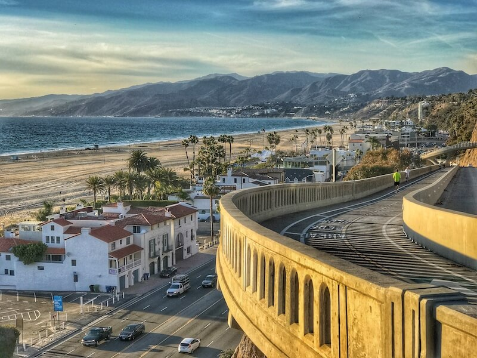

Find Your Perfect Getaway
Welcome
Welcome to Weekend Trips from Los Angeles and San Francisco. This website helps travelers discover easy weekend getaways without spending hours researching. Instead of searching through long travel blogs, users can quickly explore destinations within driving distance of these two major California cities.
Trips from San Francisco
San Francisco is located near many amazing travel destinations that are perfect for weekend trips. Visitors can explore coastal towns, mountains, and famous wine country.
Trips from Los Angeles

Los Angeles is surrounded by many great destinations that are perfect for weekend trips. Visitors can explore beaches, mountains, and desert landscapes without traveling very far.